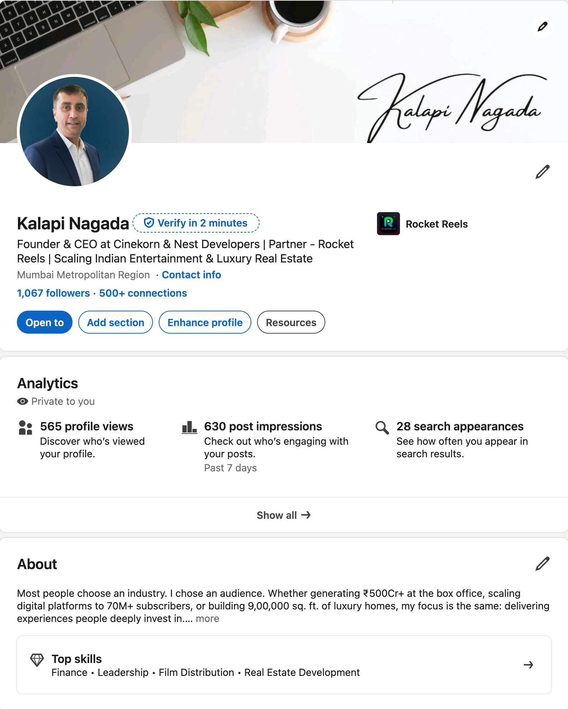
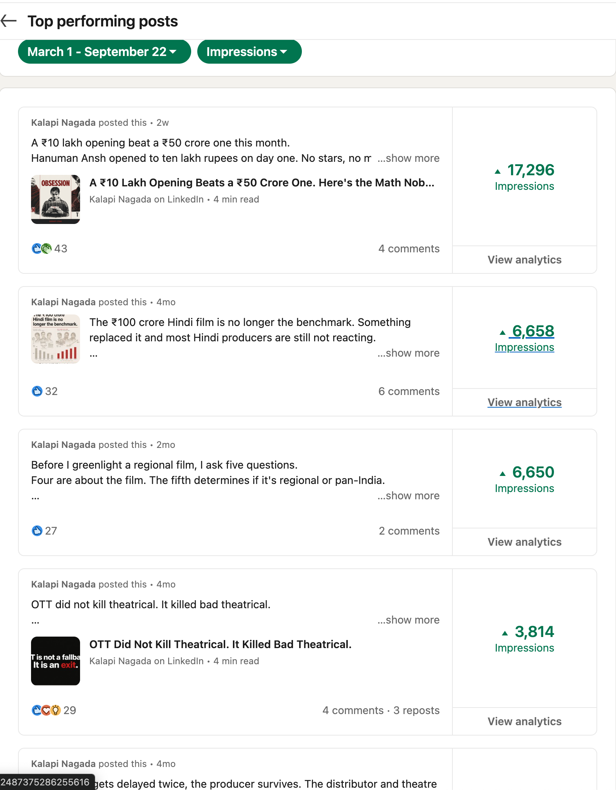

Case 05 · Kalapi Nagada LinkedIn
Turning a Founder's Industry Experience Into Content
Experience was not the shortage. The work was turning knowledge into a repeatable reason to publish.
Context
Experience was not the shortage
Kalapi Nagada has experience across film distribution, production, and the wider entertainment business. The challenge was packaging what was already there into content outsiders could use.
Problem
Knowledge is not automatically content
A distribution deal can become a flat announcement. A box-office number can become another statistic. More useful content sits underneath: Why did this happen? What does the number mean?
Strategy
Editorial pillars
- Film distribution - from acquisition to audiences
- Cinema economics - past the headline number
- OTT and digital - how viewing changes the business
- Film production - decisions and constraints before release
- Founder experience - lessons beyond the film industry
Evidence
Since 31 March 2026
| Metric | Before | After |
|---|---|---|
| Impressions | 19,581 | 61,570 |
| Engagements | 176 | 850 |
| Engagement rate | 0.90% | 1.38% |
| Followers / day | 3.15 | 6.09 |
Lift path (line chart)
Relative daily-average index: before = 100
- Impressions +265% daily avg
- Engagements +460% daily avg · followers/day +93%
37 of 50 highest-performing posts were published after 31 March. Audience: Mumbai 37% · Delhi 15% · Bengaluru 10%.
Founder profile under management.

Analytics for the managed period.

Top posts distribution after start.

Results
From knowledge to a reason to publish
Reach and engagement rose. More important: the founder's experience became a repeatable source of ideas.
Takeaway
What this showed
A personal brand does not require manufacturing a personality. Sometimes the material is already there.